원자력기사 (2017-09-10 기출문제)
1과목: 원자력기초
1. 거시적 단면적에 대한 설명 중 틀린 것은?
- 단위면적 당 중성자가 충돌할 확률이다.
- 단위체적당의 원자수에 비례한다.
- 미시적 단면적에 비례한다.
- 종류가 다른 두 혼합물의 경우 각 핵종에 대한 거시적 단면적을 계산한 후 모두 합하면 혼합물의 거시적 단면적이 된다.
(정답률: 알수없음)

2. 다음 용어 설명 중 틀린 것은?
- 감속재 온도계수 : 감속재의 단위 온도 변화에 대한 반응도 변화량
- 반응도 : 원자로 증배계수(K)의 변화 값
- 지발 초임계 : 즉발중성자와 지발중성자 모두 포함해야 원자로가 초임계 상태가 되는 것
- 원자로 주기 : 원자로 출력이 e(약 2.718)배 변화하는데 걸리는 시간
(정답률: 알수없음)
3. 중성자 감속에 대한 다음 설명 중 틀린 것은?
- 페르미 연령은 중성자가 생성되어 열중성자가 될 때까지 이동하는 평균 직선거리에 반비례한다.
- 경수의 감속거리는 중수의 감속거리보다 짧다.
- 핵분열 확률을 높이기 위해서이다.
- 좋은 감속재는 흡수단면적이 작아야 한다.
(정답률: 알수없음)
4. U235의 중성자 평균 세대 시간은?
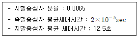
- 약 0.02초
- 약 0.04초
- 약 0.06초
- 약 0.08초
(정답률: 알수없음)
5. Xe135에 대한 다음 설명 중 틀린 것은?
- I135로부터 생성된다.
- 원자로 정지 후 약 9 ~10시간은 Xe135가 최대값을 가진다.
- I135의 반감기는 6.7시간이며 Xe135은 9.2시간이다.
- Xe135는 β 변환하여 Ba135가 된다.
(정답률: 알수없음)
6. 다음 중 중성자가 발생할 상황과 거리가 먼 것은?
- Cf252의 자발적 핵분열
- 음극관에서 높은 전류의 전자선에 의한 강한 제동복사
- 양자 빔에 의한 양자 치료기 주위물질의 방사화
- 대기로 입사한 우주방사선에 의해 2차 방사선 생성
(정답률: 알수없음)
7. 원자로 출력이 30초만에 10배 증가하였다. 이 원자로의 주기는?
- 약 8초
- 약 10초
- 약 13초
- 약 17초
(정답률: 알수없음)
8. 핵연료로 사용되는 UO2밀도가 10g/cm3이고 U235이 농축도가 10w/o일 때, U235의 원자밀도는? (단, U는 U235와 U238로 구성되어 있다. U235의 원자량은 235, U238의 원자량 : 238, O16의 원자량 : 16)
- 약 2.3×1019개/cm3
- 약 2.3×1021개/cm3
- 약 2.3×1020개/cm3
- 약 2.3×1022개/cm3
(정답률: 알수없음)
9. 다음 핵종들은 원자로에서 주로 발생하는 방사성 동위원소들이다. 이들 중 생성되는 원인이 나머지와 다른 것은?
- Co
- Kr
- I
- Cs
(정답률: 알수없음)
10. 2MeV 중성자가 중수소(H2)원자핵과 충돌하여 45°각도로 탄성산란되었다. 이 때 산란된 중성자의 에너지는?
- 약 0.8MeV
- 약 1.2MeV
- 약 1.5MeV
- 약 1.8MeV
(정답률: 알수없음)
11. 열중성자를 이용하는 냉각재로서 갖추어야 할 특성이 아닌 것은?
- 적은 중성자 흡수단면적
- 큰 열전도도
- 우수한 내부식성
- 적은 중성자 산란단면적
(정답률: 알수없음)
12. 다음 중 버클링(Buckling)에 대한 설명이 틀린 것은?
- 중성자속 분포곡선의 기울기 즉, 중성자속 분포의 곡률을 말한다.
- 버클링에는 연료, 감속재 배열에 의한 물질버클링과 원자로 크기 및 형태에 의한 기하학적 버클링이 있다.
- 높이가 H이고 반경이 R인 원통형 원자로의 버클링은
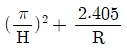
이다. - 미임계 시 기하학적 버클링이 물질버클링보다 크다.
(정답률: 알수없음)
13. 원자로에서 생성되는 독물질 Sm149에 대한 설명 중 틀린 것은?
- 핵분열로부터 직접 생성되지 않고 Pm149의 붕괴로부터 생성
- 원자로 정지 후 일정 값까지 증가한 후 일정상태 유지
- 다시 운전 재개 시 중성자 흡수로 초기의 평형상태 농도까지 감소
- 평형상태의 Sm149의 농도는 원자로 출력에 비례
(정답률: 알수없음)
14. 어떤 차폐체에서 중성자들의 평균 자유행정이 5cm일 때, 동일한 방향으로 입사한 1011개의 중성자들이 1cm 통과하는 동안 일으킨 산란 또는 흡수 반응의 총 수는?
- 약 1.0×1010
- 약 1.8×1010
- 약 5.0×1010
- 약 8.2×1010
(정답률: 알수없음)
15. 경수로 노심 출력제어를 위해 사용되는 제어봉에 대한 다음 설명 중 틀린 것은?
- 속중성자 흡수단면적이 큰 물질을 사용한다.
- B4C, Hf, Cd등의 물질을 사용한다.
- 짧은 시간 내에 반응도를 제어할 필요가 있을 때 사용한다.
- 주로 연료다발 내에 존재한다.
(정답률: 알수없음)
16. 핵연료를 처음 원자로에 장전할 때 원자로에 잉여반응도가 필요한 이유가 아닌 것은?
- 축방향의 중성자속 분포를 가급적 균일하게 하기 위하여
- 연료가 연소됨에 따라 임계상태를 유지하기 위하여
- Xe, Sm 등의 독물질에 의한 부(-)반응도를 보상하기 위해
- 연료온도계수, 감속재온도계수, 기포계수 등에 의한 출력결손을 보상하기 위해
(정답률: 알수없음)
17. 다음 중 D-T 핵융합로 내의 삼중수소 증식을 위해 Blanket 물질로 널리 사용되는 원소는?
- D
- Li
- He
- Zr
(정답률: 알수없음)
18. 원자로 내에서 U235의 핵분열 생성물로서 생성되는 핵종 중의 하나인 Xe135는 반감기가 9.2시간인 β-붕괴를 통해 Cs135로 붕괴한다. Xe135의 유효반감기는?
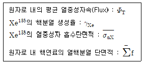
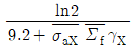
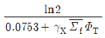
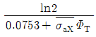
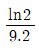
(정답률: 알수없음)
19. 1회의 핵분열 반응 후 1일의 시간이 흐른 시점에서 핵분열 생성물로부터 방출되는 방사성 붕괴에 의한 에너지가 2.66t-1.2eV/sec 라고 한다. 핵분열 1회 당 발생하는 평균에너지를 200MeV로 가정할 때 원자로의 열출력 1MW로 30일간 운전 후 60일간 정지하였을 때, 이 원자로에서 방출되고 있는 에너지는?
- 약 18W
- 약 197W
- 약 19,500W
- 약 586,000W
(정답률: 알수없음)
20. 원통형 원자로에서 U235가 20W/o로 농축된 연료를 사용한다. 이원자로의 평균 출력밀도(W/cm3)는?
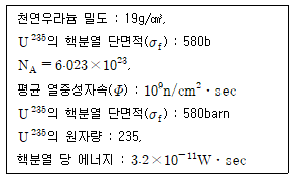
- 약 0.08
- 약 0.12
- 약 0.18
- 약 0.26
(정답률: 알수없음)
2과목: 핵재료공학 및 핵연료관리
21. 냉각재 계통에서 일어나는 전면부식에 대한 설명 중 일반적인 부식 형태가 아닌 것은?
- 금속표면이 일반적으로 고르게 용해되는 부식이다.
- 부식의 진행속도가 빠르게 일어난다.
- 금속표면에 균일하게 피막을 형성한다.
- 양극부와 음극부가 서로 근접한 피막을 형성한다.
(정답률: 알수없음)
22. 원자로에 한 번 연소된 연료를 노심 최외각에 장전하여 노심 외각으로 누설되는 중성자를 최소화하여 원자로 압력용기 피로현상을 감소시키는 핵연료 장전모형은?
- 산란 재장전
- 아웃-인 재장전
- 저-누설 장전모형
- 수정된 산란 재장전
(정답률: 알수없음)
23. 가압경수로의 CRUD에 대한 설명 중 틀린 것은?
- 원자로에서 방사성 크러드는 CVCS에서 정화시킨다.
- 금속산화물의 크러드 스테인레스강은 주로 철 산화물이다.
- 전하를 띄고 있어 금속표면에 침적하려는 경향이 있다.
- 운전정지 후에 저 방사능준위 요인이 된다.
(정답률: 알수없음)
24. 중수로 원전의 연료교체원칙이 아닌 것은?
- 최소 연소도를 갖는 채널을 최우선적으로 교체한다.
- 출력이 낮은 부분 채널은 출력이 높은 부분의 채널에 비해 자주 교체한다.
- 대칭적인 출력분포가 되도록 교체채널을 선택한다.
- 노심반응도를 되도록 크게 증가시킬 수 있는 채널을 선택한다.
(정답률: 알수없음)
25. 연료봉의 피복재로 사용되는 지르코늄(Zr)이나 원자로 제어봉의 하프늄(Hf)을 얻기 위한 처리 방법은?
- 기체확산법
- 원심분리법
- 용매추출법
- 화학교환법
(정답률: 알수없음)
26. 어떤 가압경수로의 냉각재 시료에서 측정된 I131, I132, I133, I134, 및 I135의 방사능 농도가 각각 10, 100, 50, 200, 100Bq/gr일 때, 해당 시료의 I131선량 등가방사능 농도(Bq/gr)는 얼마인가? (단,I131, I132, I133, I134 및 I135의 호흡에 대한 선량 환산인자의 상대적인 비율은 각각 100 : 1 : 20 : 3 : 4 로 가정한다.)
- 31
- 46
- 460
- 3,100
(정답률: 알수없음)
27. 우라늄 연료주기에 대한 설명으로 가장 거리가 먼 것은?
- TBP를 이용한 용매추출 기술은 정련공정에도 사용될 수 있다.
- 가압경수로 우라늄 연료주기에서 변환은 우라늄 정광에서 UF6를 만드는 공정이다.
- 불소화는 UO2에 불산(HF)을 반응시켜 UF4로 만드는 공정이다.
- 레이저 농축법에서는 우라늄 동위원소 분리에 자기장이 이용된다.
(정답률: 알수없음)
28. 어떤 암석시료의 방사능을 측정한 결과 U238, Pb206의 동위원소 비율이 5 : 1로 나타났다. 이 암석은 언제 생성된 것으로 볼 수 있는가? (단, U238의 반감기는 4.5×109년이다. )
- 약 8억년 전
- 약 10억년 전
- 약 12억년 전
- 약 15억년 전
(정답률: 알수없음)
29. 다음 중 방사성폐기물 처분계통의 구성요소 요구사항이 아닌 것은?
- 폐기물 특성
- 냉각수원
- 지질 환경
- 처분시설
(정답률: 알수없음)
30. 원자력발전소의 수화학 처리 목적이 아닌 것은?
- 노심 내 불순물 유입 및 방사능 축적을 최소화시킨다.
- 노심 내 침적물에 의한 중성자 포획을 증진시킨다.
- 작업 중 방사선 조사를 가능한 한 최소화한다.
- 방사능 환경 누출을 방지한다.
(정답률: 알수없음)
31. 대형 냉각재 상실사고(LBLOCA)시 연료 피복재에서 가장 주요하게 고려되는 부식형태는?
- 틈새부식
- 점식
- 수소손상
- 침식부식
(정답률: 알수없음)
32. 중수로 원전에서 냉각재계통의 삼중수소 발생 원인에 대항여 틀린 설명은?
- 중수가 중성자를 흡수하여 생성
- pH제어로 사용되는 리튬의 중성자 조사에 의한 핵변환
- 삼중핵분열
- 부식생성물의 방사화
(정답률: 알수없음)
33. 가스확산법을 사용하는 농축공장에서 감손우라늄의 농축도는 0.3w/o, 우라늄 농축에 필요한 비용은 20만원/kg, SWU라고 할 때, 의 비율 0.7w/o 천연울나늄 500kg으로 3.5w/o 농축우라늄 78kg을 생산하는데 필요한 비용은?
- 약 1600만원
- 약 3500만원
- 약 4700만원
- 약 10,000만원
(정답률: 알수없음)
34. 연료건전성에 영향을 미칠 수 있는 현상에 대한 다음 설명에서 괄호 안에 들어갈 단어를 순서대로 나열한 것으로 적절하지 않은 것은?
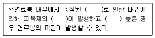
- 분열생성물 기체, 크립, 응력
- 방사화 생성물 기체, 수소취화, 온도
- 분열생성물 기체, 수소취화, 온도
- 방사화 생성물 기체, 크립, 온도
(정답률: 알수없음)
35. 연료 성형가공과 관련하여 다음 중 성격이 다른 것은?
- ADU
- IDR
- GECO
- 유동층법
(정답률: 알수없음)
36. 천연 우라늄을 연료로 하는 임계 원자로에서 전환비(Conversion Rate)가 0.9라고 하면 1kg의 U235가 소비될 때 생성되는 Pu239의 양은?
- 0.006kg
- 0.885kg
- 0.915kg
- 127.7kg
(정답률: 알수없음)
37. 중간저장시설과 관련한 다음 설명 중 틀린 것은?
- 사용후연료는 붕괴열 및 방사선 피폭의 위험이 있어 소내에만 저장한다.
- 소내 중간저장시설의 목적은 사용후연료를 처리 또는 영구처분하기 전에 충분한 냉각기간을 제공하기 위함이다.
- 중간저장시설에서 베타 및 감마선은 충분히 감쇠되고 일부 무거운 핵종들은 재처리시 분리될 수 있는 핵종으로 변하게 된다.
- 소내 중간저장시설에는 신연료가 저장될 수 있다.
(정답률: 알수없음)
38. 선행 핵주기에 대한 다음 설명 중 틀린 것은?
- 정련은 우라늄 원광에서 우라늄 정광을 분리해내는 공정이다.
- Yellow Cake는 U3O8분말을 의미한다.
- 국제시장에서의 우라늄 거래는 우라늄 원광으로부터 이루어지고 있다.
- 정련공정은 우라늄의 분쇄, 침출, 정제, 화학적 침전, 여과, 건조 등의 단계로 이루어져 있다.
(정답률: 알수없음)
39. 가압경수로 냉각재계통에 존재하는 동위원소에 대한 설명 중 틀린 것은?
- 냉각재 중에 존재하는 산소원자가 고에너지의 감마선에 조사된 후 생성된다.
- N16은 반감기가 매우 짧아 빨리 붕괴된다.
- N16은 고에너지의 감마선을 수반하면서 붕괴되므로 냉각재가 흐르는 기기 주위에는 차폐가 필요하다.
- N16은 방어대책으로서 원자로 출구 측 시료채취관에 붕괴코일(Delay Coil)을 설치하여 작업자를 보호한다.
(정답률: 알수없음)
40. 가압경수로에서 펠렛과 피복재 상호작용에 의한 의료손상을 방지하는 방안으로 적당하지 않은 것은?
- 출력상승률 제한
- 선출력밀도 제한
- 연료집합체 지지격자 재질강화
- Chamfered Pellet 사용
(정답률: 알수없음)
3과목: 발전로계통공학
41. 다음 일반적인 보조급수계통에 대한 다음 설명 중 틀린 것은?
- 단일고장을 고려하여 다양성과 다중성을 모두 갖도록 설계된다.
- 자동으로 SG에 급수를 공급하며 손상된 SG의 급수공급을 자동으로 차단된다.
- 대부분 터빈 구동펌프와 전동기 구동펌프로 구성된다.
- 발전소 정상운전 중에는 사용되지 않는다.
(정답률: 알수없음)
42. 한국 표준형 원전의 공학적 안전설비 작동계통(ESFAS)은 설계기준 사고 시 사고결과를 허용치 이내로 유지하기 위하여 안전계통을 작동시키는 기능을 갖는다. 다음 중 해당되는 작동신호가 아닌 것은?
- 다양성보호계통 작동신호(DPS)
- 격납용기 격리 작동신호(CIAS)
- 주증기 격리신호(MSIS)
- 안전주입신호(SIAS)
(정답률: 알수없음)
43. 발전소에서는 계통조건에 사용되는 압력계기에 따라 단위가 상이한 경우가 많다. 실내의 기압계가 75mmHg를 지시하고 있다고 가정할 때, A) 증기터빈 입구의 계기압력이 225kg/cm2 지시, B) 복수기 진공압력계의 지시치가 700mmHg 진공일 경우 이를 절대압력(kg/cm2ㆍa)으로 올바르게 표현한 것은? (단, 대기압 : 1.033kg/cm2=760mmHg 이다. )
- A : 21.47, B : 0.0748
- A : 23.5, B : 0.0748
- A : 23.5, B : 1.976
- A : 21.47, B : 1.976
(정답률: 알수없음)
44. 가압경수로의 원자로 용기에는 중성자에 의한 조사취화현상이 발생되는데 다음 중 조사취화에 영향을 받지 않는 인자는?
- 무연성 천이온도
- 최대 흡수에너지
- 파괴인성
- 화학조성
(정답률: 알수없음)
45. 다음 중 경수로의 대표적인 열적 설계제한치에 포함되지 않는 것은?
- 과도조건에서 피복재 평균 온도
- 정상조건에서 피복재 평균 온도
- 과도조건에서 최소 DNBR이 DNBR 제한치 이상
- 피복재 변형률이 1% 이내
(정답률: 알수없음)
46. 외부온도가 10℃일 때, 어떤 사무실의 온도를 25℃로 유지하기 위하여 5×108J/day의 열이 사무실에 공급되어야 한다. 열펌프가 에너지를 공급하기 위하여 사용될 때 하루 동안 열펌프에서 공급해야할 최소 일은? (단, 열펌프 내 저장되는 에너지의 엔트로피에는 아무 변화가 없고 대기와 사무실은 열펌프에 비하여 크기 때문에 열에너지 저장소라고 한다.)
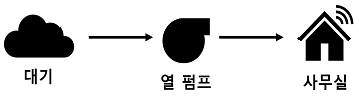
- 2.5×107J/day
- 2.5×109J/day
- 5.0×108J/day
- 5.0×1010J/day
(정답률: 알수없음)
47. 풀비등에서 열유속은 과열도의 변화에 따라 비등곡선을 가진다. 과열도가 증가함에 따라 1기압의 물에 대한 비등의 순서로 맞는 것은?
- 핵비등 → 천이비등 → 막비등 → 자유대류비등
- 자유대류비등 → 핵비등 → 천이비등 → 막비등
- 막비등 → 자유대류비등 → 핵비등 → 천이비등
- 천이비등 → 막비등 → 자유대류비등 → 핵비등
(정답률: 알수없음)
48. 원자로 노심에서의 열발생에 대한 설명으로 틀린 것은?
- 노심 내에서 열발생은 핵연료의 핵분열에 비례한다.
- 핵연료에서 발생된 열은 핵연료 주변을 통과하는 유체에 의하여 제거되고 이 열은 핵연료 입구 측으로 들어온 냉각재를 출구 측 온도까지 높이는데 사용된다.
- 핵분열률은 중성자속에 비례하는데 고속 중성자속이 핵분열률을 좌우하는 주된 요인으로 작용한다.
- 노심 열발생은 핵연료 부피, 핵분열 당 에너지, 핵분열 단면적, 단위 부피 당 핵분열 가능핵종 수에 비례한다.
(정답률: 알수없음)
49. 한국 표준형 원전의 증기발생기 수위제어에 대한 설명으로 틀린 것은?
- 저온의 급수량이 증가하면 물속의 증기방울이 응축되어 증기발생기 수위가 감소하는 수축현상이 일어난다.
- 저출력 상태에서는 급수 및 증기유량이 작아 상대오차가 감소하여 급수와 증기 유량의 차이에 의한 보상이 쉽다.
- 급구 공급량이 감소하면 증기발생기 내 물속의 증기방울이 증가하여 증기발생기 수위가 증가한다.
- 일반적으로 증기발생기 수위는 급수조절밸브의 개도와 주급수펌프의 회전수를 조절하여 제어된다.
(정답률: 알수없음)
50. 냉각재 유체가 냉각재계통의 증기발생기 튜브를 따라 흐를 때 발생하는 압력손실에 대한 설명으로 틀린 것은?
- 튜브의 길이에 비례
- 수력학적 지름에 반비례
- 유속에 비례
- 마찰계수에 비례
(정답률: 알수없음)
51. 원자로를 Po 출력으로 To 시간동안 가동 후 정지시켰을 때, 정지된 때로부터 ts 시간 경과 후 분열생성물 붕괴에 의한 열출력 P(to, ts)s,s 는 다음과 같다.
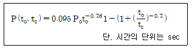
원자로를 1,000MWt로 100일 연속 운전하다가 정지시킨 후 10분이 지났을 때 분열생성물의 붕괴에 의한 열출력은?
- 9.9MWt
- 15.4MWt
- 20.2MWt
- 25.7MWt
(정답률: 알수없음)
52. 가압경수로의 냉각재계통에 있는 기기에 대한 설명으로 틀린 것은?
- 증기발생기의 급수예열기는 냉각재계통에 충분한 강제순환 유량을 제공하고 발전소 기동 중에는 냉각재계통을 가열시킨다.
- 가압기는 냉각재 운전압력을 일정하게 유지시키고 과도상태 시 발생하는 냉각재의 체적변화를 수용한다.
- 원자로 압력용기는 방사선의 영향과 고온 및 고압의 상태에서 견디도록 설계되어 있으며 연료집합체, 제어봉집합체 및 내부구조물을 내장한다.
- 냉각재 펌프의 진동기는 유도전동기로서 플라이휠이 장착되어 펌프정지 시 냉각재 유량을 점진적으로 감소하도록 한다.
(정답률: 알수없음)
53. 원자력발전소의 효율은 약 35%이다. 다음 중 어느 기기에서 가장 큰 효율의 손실이 발생되는가?
- 증기발생기
- 터빈
- 주급수 펌프
- 복수기
(정답률: 알수없음)
54. 베르누이 법칙이 적용될 수 있는 선행조건에 대한 다음 설명 중 틀린 것은?
- 유체흐름 내의 임의의 두 점은 같은 직선상에 있다.
- 마찰이 없는 흐름이다.
- 압력수두, 위치수두와 속도수두의 총합은 언제나 일정하다.
- 비압축성 유체의 흐름이다.
(정답률: 알수없음)
55. 원자력발전소 계통에서 이루어지는 열전달에 대한 설명으로 틀린 것은?
- SG의 급수유량을 급격히 감소시키면 전열면의 열제거가 잘 이루어지지 않는다.
- 연료표면의 온도가 포화온도에 도달하면 핵비등이 발생한다.
- 증기발생기 압력을 급격히 감소시키면 막비등을 일으킬 수 있다.
- 냉각재 압력이 급격히 상승할 때 핵비등 상태로 계속 유지하기 위해서 열원의 온도저하가 필요하다.
(정답률: 알수없음)
56. 다음 중 사용후연료의 결함을 탐지하는 방법이 아닌 것은?
- 세슘방사능 분석
- 육안검사
- 초음파 검사
- 방사선 투과검사
(정답률: 알수없음)
57. 핵비등 이탈(DNB)에 대한 설명으로 틀린 것은?
- DNBR이 클수록 부분막비등을 방지하는데 유리하다.
- 냉각재 온도의 상승으로 포화온도에 접근함에 따라 기포발생으로 DNBR이 감소한다.
- 가압기 분무계통 고장 등으로 인해 냉각재계통의 압력이 증가하면 핵비등 이탈률이 감소한다.
- 원자로 출력을 감소시키면 핵비등이탈률이 증가한다.
(정답률: 알수없음)
58. 다음 무차원 수에 대한 물리적 의미 중 틀린 것은?
- 레이놀즈 수는 점성력에 대한 관성력의 비
- 프라우드 수는 중력에 대한 관성력의 비
- 웨버 수는 압력에 대한 관성력의 비
- 마하 수는 탄성력에 관한 관성력의 비
(정답률: 알수없음)
59. 다음 중 한국표준형 원전의 냉각재계통 저온과압 보호를 위한 기기는?
- 가압기 안전감압밸브
- 가압기 안전밸브
- 주증기 안전밸브
- 정지냉각계통 흡입측 방출밸브
(정답률: 알수없음)
60. 가압경수로 냉각재계통의 누설에 대한 설명 중 틀린 것은?
- RCS에 설치된 밸브의 패킹에서 누설이 발생하여 수집탱크에 모여지면 확인누설로 분류한다.
- 확인누설의 제한치는 10gpm(2.27m3/hr)이다.
- RCS를 구성하는 기기들의 밀봉장치, 가스켓 등에서 발생하는 누설은 냉각재 압력경계 누설이다.
- 냉각재계통의 압력경계 누설은 허용되지 않는다.
(정답률: 알수없음)
4과목: 원자로 안전과 운전
61. 다음 중 국제 원자력 사고 및 고장등급(INES) 관련 설명으로 틀린 것은?
- INES는 원자력 관련 시설에서 발생하는 각종 사건들의 심각한 정도를 일반 대중에게 신속하고 일관성 있게 전달하기 위한 수단이다.
- 2등급 이상으로 평가된 사건 또는 국제사회의 관심을 유발하는 사건에 대하여서는 24시간 이내에 INES 정보시스템에 통보하도록 권고하고 있다.
- 등급체계는 사고 및 고장의 심각도에 따라 1등급에서 7등급으로 분류하며 3등급 이상의 사건은 사고로 분류하고 있다.
- 2011년 일본 후쿠시마 원전사고와 1986년 체르노빌 원전사고는 INES 7등급에 속하는 대형사고이다.
(정답률: 알수없음)
62. 다음 중 정지여유도에 대한 설명으로 맞는 것은?
- 계산을 위해 붕산농도, 냉각재 평균온도, 제어봉 위치값 등이 사용
- 원자로가 정지된 후에는 정지여유도 계산은 의미가 없다.
- 정지 후 재기동을 위해서는 가능한 정지여유도를 낮게 유지
- 출력운전 중 원자로 정지 시 정지여유도는 감소 후 증가한다.
(정답률: 알수없음)
63. 원자로 노심의 안전성을 확보하기 위해 고려하는 제한사항이 있다. 다음 중 핵적 특성을 고려한 제한사항이 아닌 것은?
- 축방향 중성자속
- 연료봉 중심온도
- 연료 변형률
- 열속 첨두계수와 엔탈피 첨두게수
(정답률: 알수없음)
64. 다음 중 가압 열충격을 유발할 수 있는 사고가 아닌 것은?
- 소형 증기관 파단사고
- 소형 냉각재 상실사고
- 대형 증기관 파단사고
- 대형 냉각재 상실사고
(정답률: 알수없음)
65. 가압경수로형 원자력발전소는 설계기준사고 시 분열생성물의 외부 누출을 억제하고 종사자와 공중의 안전을 목표로 공학적 안전설비가 설치되어 있다. 다음 중 공학적 안전설비(ESF)의 기능이 아닌 것은?
- 주제어실 거주성 확보
- 원자로건물 건전성 확보
- 폐기물 건물 건전성 확보
- 냉각재 재고량 확보
(정답률: 알수없음)
66. 원자로 노심으로 제어봉이 삽입되어 원자로 출력이 감소되었다. 이는 유효증배계수() 감소로 인한 것이다. 다음 중 제어봉이 유효증배계수 인자 중 가장 많이 영향을 주는 인자는?
- 공명이탈확률
- 열중성자 이용률
- 속분열인자
- 재생계수
(정답률: 알수없음)
67. 다음 중 중대사고 현상 중 용융된 연료가 저온상태의 냉각수와 접촉함으로서 급격한 열전달이 일어나 증기팽창에 의한 고온 및 고압이 발생하는 것은?
- 고압 용융물 분출(HPME : HIgh Pressure Mel Ejection)
- 격납건물 직접 가열(DCH : Direct Containment Heating)
- 노심용융물과 콘크리트 상호작용(MCCI : Molten Core Concrete Interaction)
- 연료(노심 용융물)와 냉각재 상호작용(FCI : Fuel Coolant Interaction)
(정답률: 알수없음)
68. 다음 중 가압경수로 노심의 반경방향 중성자속 분포에 가장 적게 영향을 미치는 것은?
- 제어봉 위치
- 노심으로 유입되는 냉각재 붕소농도의 변화
- 노심 연소도 증가
- 연료 농축도 변화
(정답률: 알수없음)
69. 다음 중 원자로 반응도의 부(-)의 궤환효과 중 하나로 도플러계수와 밀접한 관계가 있는 것은?
- 감속재 온도계수
- 기포계수
- 지발중성자 분율
- 핵연료 온도계수
(정답률: 알수없음)
70. 가압경수로형 원전에서 냉각재상실사고(LOCA)가 발생하면 연료의 손상을 방지하고 적절하게 냉각재 재고량을 유지하여야 한다. 이런 기능과 가장 관련이 있는 공학적 안전설비 작동신호(ESFAS)는?
- 격납건물 격리 작동신호(CIAS)
- 격납건물 살수 작동신호(CSAS)
- 안전주입 작동신호(SIAS)
- 보조급수 공급 작동신호(AFAS)
(정답률: 알수없음)
71. 다음 중 ANSI/ANS N18.2(1973)에서 분류한 발전소 설계 시 고려된 사건분류를 따를 때 냉각재계통(RCS) 강제순환 유량의 완전상실에 해당하는 등급은?
- Condition I
- Condition II
- Condition III
- Condition IV
(정답률: 알수없음)
72. 가압경수로형 원자력발전소에서 주증기관 파단사고(MSLB), 원자로냉각재상실사고(LOCA)< 증기발생기튜브파단사고(SGTR)의 공동적인 특징에 해당하는 것은?
- 안전주입 발생
- 건물 내 방사선준위 증가
- 가압기 고압력
- 냉각재 과냉각 여유도 감소
(정답률: 알수없음)
73. 다음 중 제어봉 삽입한계의 설정배경이 아닌 것은?
- 제어봉 인출사고 시 노심에 인가될 수 있는 정(+)반응도 최소화
- 증기관 파단사고 시 필요한 정지여유도 확보하기 위한 충분한 부반응도 제공
- 첨두계수를 최소화하기 위하여 충분한 부반응도 제공
- 냉각재계통의 충분한 과냉각여유도
(정답률: 알수없음)
74. 다음 중 노심말기에 감속재 온도계수는 어떤 값을 갖는가?
- 더 큰 부반응도
- 더 큰 정반응도
- 더 작은 부반응도
- 더 작은 부반응도
(정답률: 알수없음)
75. 원자력 시설의 고장 및 손괴 시 일반인에게 방사선 장해를 직접 또는 간접적으로 미칠 우려가 있는 설비를 안전설비라고 한다. 다음 중 안전설비에 해당되지 않는 것은?
- 원자로 격납용기
- 비상설비 및 그 부속설비
- 1차 RCS 설비와 그 부속설비
- 2차 계통 설비와 그 부속설비
(정답률: 알수없음)
76. 원자로 안전을 최우선으로 고려하는 개인과 조직의 태도 및 의식의 결집체를 원자력 안전문화이라 한다. 다음 중 원자력 안전문화의 구성요소가 아닌 것은?
- 국민의 임무
- 관리자의 임무
- 종사자의 임무
- 정책차원의 임무
(정답률: 알수없음)
77. 원자력발전소의 사고발생 가능성을 우선 방지하고 사고 발생 시에는 이의 확대를 최대한 억제하며 만일 사고가 확대하여 사고로 진전되었을 때에는 그 영향을 최소화하고 진전단계마다 적절한 방어체계를 갖추는 기본 안전개념은?
- 인간 신뢰도 분석 및 설계
- 심층방어
- 주기적 안전성 평가
- 확률론적 안전성 평가
(정답률: 알수없음)
78. 발전용 원자로 운영자는 해당 원자로 시설의 운영허가를 받은 날로부터 10년마다 안전성을 종합적으로 평가하고 주기적인 안전성 평가보고서를 원자력 안전위원회에 제출하여야 한다. 다음 중 PSR의 세부내용 중 확률론적 안전성평가(PSA) 내용이 아닌 것은?
- 기존의 PSA에서 고려된 가정사항과 가상 초기사건, 평가 방법론 및 컴퓨터 코드에 대해 현행 기술과의 비교상태
- 운전원이 취해야 할 조치, 공통원인 사고, 상호영향, 다중성 및 다양성 등을 고려한 PSA 지침
- 품질보증계획서와 PSA 모델 및 결과와의 연계성
- PSA 결과로 도출된 원자로시설의 설계 및 운전 취약점을 제거하기 위한 가능성 대안의 평가 및 비교
(정답률: 알수없음)
79. 일본 후쿠시마 원전에서 지진 및 해일에 의해 중대사고가 발생하였다. 다음 중 우리나라에서는 추진하는 후쿠시마 후속조치 사항이 아닌 것은?
- 지진과 해일에 의한 안전성 확보, 중대사고 내용 등 5개 분야 개선
- 국내 안전점검 개선대책 및 추가 보완대책 발굴
- 전 원전 스트레스 테스트 및 사고관리 계획서 마련
- 가동원전 24개 호기에 대해 안전정지계통 내진성능 3G로 보강
(정답률: 알수없음)
80. 가압경수로형 원자력발전소에 모든 냉각재 펌프(RCP)가 정지되어 자연순환에 의해 냉각재가 냉각되고 있다. 다음 중 자연순환 저해요인이 아닌 것은?
- 상부헤드 부분의 순환유량
- 비응축성 가스의 축적
- 냉각재의 재고량 상실
- 유로간 열제거의 심한 불균형
(정답률: 알수없음)
5과목: 방사선이용 및 보건물리
81. 다음 중 축적인자에 가장 큰 영향을 주는 반응은?
- 광전효과
- 쌍전자 생성
- 제동복사
- 콤프톤 효과
(정답률: 60%)
82. 방사선의 생물학적 작용을 설명하기 위해 확률론적 영향과 결정론적 영향의 개념이 사용되기도 한다. 다음 중 결정론적 영향에 대한 설명으로 틀린 것은?
- 발단선량이 존재한다.
- 대표적 증상으로 백내장, 홍반 등이 있다.
- 대부분 지발성으로 증상이 나타난다.
- 피폭과 증상발현의 인과관계가 필연적이다.
(정답률: 알수없음)
83. 다음 중 1MeV 광자에 대한 조사선량, 흡수선량, 유효선량의 관계로 맞는 것은?
- 1C/kg=1Gy=1Sv
- 1C/kg=40Gy=40Sv
- 40C/kg=40Gy=40Sv
- 40C/kg=1Gy=1Sv
(정답률: 알수없음)
84. 다음 중 커마(KERMA)에 대한 설명으로 틀린 것은?
- 입자 플루언스에 선에너지 전달계수를 곱한 것이다.
- 2차 하전입자 평형이 이루어진 상태에서 자유공기 중의 커마와 흡수선량은 같다.
- 비하전 방사선에 의해 단위 질량 중 생성된 모든 하전입자의 초기 운동에너지와 같다.
- 물질의 입사면에서는 발생되는 2차 하전입자의 전방쪽 이동으로 인해 커마가 흡수선량보다 크다.
(정답률: 알수없음)
85. 방사능에 오염된 장비의 50cm 거리에서의 방사선량률이 0.5mSv/hr이고, 공기오염도가 50DAC인 지역에서 10시간 작업을 수행한 방사선 작업종사자의 총 피폭선량은? (단, 방사선 안전관리 목적으로 방사선 작업종사는 방호계수가 10인 반면 마스크를 착용하고 방사능에 오염된 장비의 50cm 거리에서 작업하였다.)
- 5.1mSv
- 5.3mSv
- 5.5mSv
- 5.7mSv
(정답률: 알수없음)
86. Nal(Tl)의 섬광검출기에서 발생되는 신호는 흡수된 방사선 에너지에 비례한다. 이러한 펄스를 크기에 따라 해당 채널에 기록하여 측정되는 방사선의 에너지 스펙트럼을 낼 수 있는 장치는?
- 카운터
- 파고선별기
- 단일채널 파고분석기(SCA)
- 다중채널 파고분석기(MCA)
(정답률: 알수없음)
87. 불안정한 C14이 붕괴하여 안정한 N14으로 변환되었을 때 일어나나는 방사성 붕괴로 맞는 것은?
- β+
- β-
- EC
- α
(정답률: 알수없음)
88. 분해시간이 300μs인 GM계수기를 사용하여 500cps의 계수율을 얻었을 때 참 계수율은 약 얼마인가?
- 412cps
- 500cps
- 512cps
- 588cps
(정답률: 알수없음)
89. 방사선 감수성을 나타내는 대표적인 개념인 생물학적 효과비에 대한 설명 중 틀린 것은?
- 선에너지전달이 증가할수록 선형적으로 증가한다.
- 250KVp의 엑스선에 의한 생물학적 효과를 기준으로 한다.
- 영향을 미치는 인자로는 선질, 선량, 선량률 등이 있다.
- OER이 큰 방사선은 RBE가 대채적으로 작다.
(정답률: 알수없음)
90. 국제 방사선방호위원회(ICRP)k가 권고하는 방사선 방호의 3대 기본원칙으로 틀린 것은?
- 정당화 원칙
- 방호의 최적화 원칙
- 선량한도 적용 원칙
- 피폭 예방 원칙
(정답률: 알수없음)
91. 다음 중 제동방사선 차폐를 고려해야 하는 방사성 동위원소는?
- N16
- Ni63
- Sr90
- Cf252
(정답률: 알수없음)
92. 다음 중 방사선의 투과력에 대한 설명으로 맞는 것은?
- 에너지가 동일할 경우 전하가 크고 질량이 클수록 방사선의 투과력이 증가한다.
- 에너지가 동일할 경우 전하를 가지는 방사선은 중성의 방사선에 비해서 투과력이 크다.
- 같은 종류의 방사선은 대체적으로 에너지가 감소할수록 투과력이 감소한다.
- 선에너지전달(LET)의 값이 큰 방사선은 투과력이 크다.
(정답률: 알수없음)
93. 다음 천연 방사성 핵종 중 현재 거의 존재하지 않는 것은?
- 우라늄 계열
- 넵투늄 계열
- 토륨 계열
- 악티늄 계열
(정답률: 알수없음)
94. 광자선의 강도를 1/2로 줄일 수 있는 흡수체 두께는 반가층이라 하며 1/10으로 줄일 수 있는 흡수체의 두께는 1/10가층이라 한다. 다음 중 반가층(HVL)과 십가층(TVL)의 관계로 옳은 것은?
- TVL=0.2×HVL
- TVL=0.693×HVL
- TVL=3.3×HVL
- TVL=5×HVL
(정답률: 알수없음)
95. 다음 중 비유효에너지(SEE)에 대한 설명으로 틀린 것은?
- 피폭 조직의 구성물질 및 위치에 따라 값이 달라진다.
- 체내 유입된 방사성핵종이 침착된 선원조직의 단위 질량당 흡수되는 에너지로 정의된다.
- 선원조직에서 방출하는 방사선의 에너지에 비례한다.
- 방사선 종류에 따라 다른 값을 갖는다.
(정답률: 알수없음)
96. 다음 중 방사선 검출기와 검출원리가 맞게 연결된 것은?
- 반도체검출기와 핵반응
- 비례계수기와 기체전리
- GM계수기와 섬광작용
- 포켓선량계와 발광작용
(정답률: 알수없음)
97. 다음 중 흡수선량에 관한 설명으로 맞는 것은?
- 방사선에 의해 물질의 단위 질량당 흡수된 에너지를 말한다.
- 모든 물질에 관해서 단위 질량에서 발생한 하전입자의 에너지의 총량을 말한다.
- 하전입자에 의해 물질의 단위 질량당 흡수된 에너지를 말한다.
- 방사선에 의해 조직 등가물질의 단위 질량당에 흡수된 에너지를 말한다.
(정답률: 알수없음)
98. 다음 체내오염측정 방법 중 체내의 침착범위를 가장 정확하게 알 수 있는 방법은?
- 전신계수기(WBC)
- 생체분석법
- 공기 중 방사능 농도에 의한 분석법
- 코 스미어 법
(정답률: 알수없음)
99. 먼지나 분진과 같은 입자형태의 방사성 물질을 흡입하여 발생하는 내부피폭에서 입자의 크기에 따라 방사능 중앙 공기역학적 직경(ATMD)나 방사능 중앙 열역학적 직경(AMTD)을 다르게 적용하여 선량평가를 하여야 한다. 방사능 중앙 열역학적 직경(AMTD)을 적영하여야 하는 적절한 입자의 크기(μm)는?
- 0.1 미만
- 1
- 5
- 5 초과
(정답률: 알수없음)
100. 비례계수기에 사용되는 대표적인 계수용 기체는?
- P-10
- Q 기체
- He 기체
- Ne 기체
(정답률: 82%)